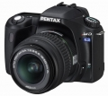

Pentax公司于2005年8月22日推出配置2.5彩色TFT LCD和610有效像数的数码单反相机：ist DS2。ist DS2与ist DL的模式和操作系统基本相同，同时继承了ist DS的主要规格指标。主要特点：1、采用2.5210,000 背光式TFT LCD；2、机子重量为505g；3、視野率 95% 、倍率 0.95倍的取景器；4、各种Pentax镜头都适用。
好东西，玩儿手动不二选择
0.95倍率，五棱镜等，绝非K100D可比的
如此价格，没有缺点
宾得风格的绝唱
小巧扎实，做工完美，取景器明亮宽敞
像素不够高，不支持超声波马达
...
非常优秀的入门机！
典型宾得的色彩！喜欢！ 机身坚固，非350D、D70之类入门机可比！ 做工精良！ LCD太爽了！ 明亮的取景器！
对焦稍慢 机顶没有夜光灯 操作便捷性差
没有更好选择了的入门DSLR
比较DS: 改进的AF速度 菜单更人性化 取景器信息更丰富 高分辨率的大屏 提高的存储速度.
没有DS性价比高,测光方式转换依然烦琐.